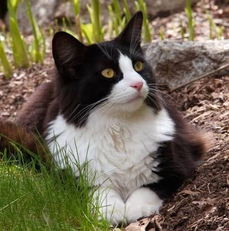

Marketplace
Contacto



Nombre: Felix
Felix es un hermoso gatito que está buscando una familia que le brinde cariño, atención y un hogar donde pueda sentirse seguro y acompañado.
Edad: 4 años
Con cuatro años de edad, Felix es un gato adulto que necesita una familia que pueda ofrecerle estabilidad, cuidados y compañía. Es una buena oportunidad para darle un hogar a un compañero que todavía tiene mucho amor por compartir.
Especie: Gato bicolor
Los gatos bicolores se caracterizan por tener un pelaje que combina dos colores, creando patrones únicos en su apariencia. Son gatos que, como cualquier otro, necesitan una alimentación adecuada, higiene, atención y un ambiente seguro para vivir.
Estado de salud
Felix se encuentra en buen estado de salud. Según la información proporcionada, no presenta enfermedades ni problemas de salud conocidos.
Sobre su adopción
Felix busca una familia responsable que esté dispuesta a ofrecerle un hogar lleno de cariño, protección y tranquilidad. Necesita personas que puedan brindarle atención, cuidados y compañía durante toda su vida.